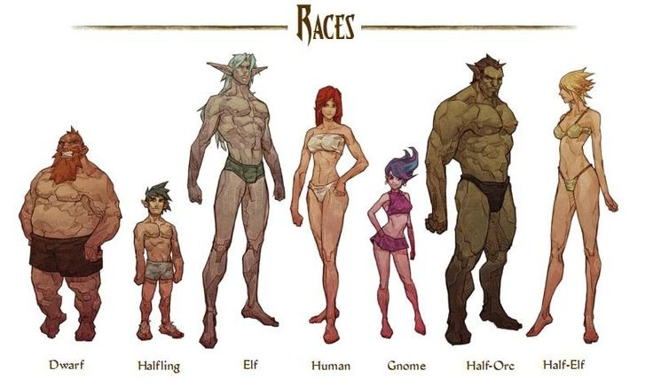

Raças
-

Forje seu destino através de sua raça!
No mundo do RPG, sua raça é mais do que uma simples origem — ela molda sua jornada, suas habilidades e até a forma como o mundo o vê. Seja descendente de antigos impérios, fruto de um povo recluso ou parte de uma linhagem mística, sua herança traz consigo talentos únicos e desafios próprios. Alguns possuem força e resistência sobre-humanas, outros são ágeis como o vento ou mestres na arte da magia. Enquanto uns são bem-vindos em qualquer cidade, outros carregam estigmas e precisam provar seu valor a cada passo. 🏹 Mas no fim, não é apenas a sua raça que define quem você é — são suas escolhas, sua coragem e os laços que constrói ao longo da jornada. Quem você será nesta grande aventura?
-
Gnomos

Pequeninos, Geniais e Cheios de Energia!
 Os gnomos podem ser pequenos em estatura, mas sua curiosidade e inteligência são imensas! Com uma mente ágil e um espírito brincalhão, eles são mestres da invenção, da magia e da esperteza.
Os gnomos podem ser pequenos em estatura, mas sua curiosidade e inteligência são imensas! Com uma mente ágil e um espírito brincalhão, eles são mestres da invenção, da magia e da esperteza.
Alguns dedicam suas vidas à engenharia e alquimia, enquanto outros exploram os segredos arcanos com entusiasmo incansável.
Dotados de uma vida longa e uma visão otimista do mundo, os gnomos raramente se abalam diante do perigo. Sua criatividade sem limites os torna aventureiros excepcionais, seja resolvendo enigmas impossíveis ou criando engenhocas mirabolantes.
O que você criará com sua engenhosidade? Qual será sua próxima grande descoberta?
Habilidades e Atributos
Aumento de Atributo: +2 Inteligência
Tamanho: Pequeno
Deslocamento: 25 pés
Visão no Escuro: Enxerga no escuro até 60 pés.
Esperteza Gnômica: Você tem vantagem em testes de resistência contra magia que tente te enfeitiçar ou te amedrontar.
Idiomas: Comum e Gnômico.
-
Orc

Guerreiros da Força e da Fúria!
 Nascidos para a batalha, os orcs são símbolos de força, resistência e determinação. Com corpos robustos e instintos aguçados, eles encaram desafios de frente, sem medo do perigo. Seu espírito guerreiro os torna temidos em combate, mas há muito mais nos orcs do que apenas fúria e violência.
Nascidos para a batalha, os orcs são símbolos de força, resistência e determinação. Com corpos robustos e instintos aguçados, eles encaram desafios de frente, sem medo do perigo. Seu espírito guerreiro os torna temidos em combate, mas há muito mais nos orcs do que apenas fúria e violência.
Alguns seguem o caminho da tradição, honrando os costumes de seus clãs e protegendo seus aliados com lealdade inabalável. Outros desafiam o destino, buscando um propósito além da guerra, explorando a magia, a estratégia e o conhecimento.
Seja como ferozes líderes de guerra ou destemidos aventureiros, os orcs carregam consigo uma força que vai além do físico — a vontade indomável de deixar sua marca no mundo.
Você está pronto para despertar o guerreiro dentro de você?
Habilidades e Atributos
Aumento de Atributo: +2 Força, +1 Constituição
Tamanho: Médio
Deslocamento: 30 pés
Visão no Escuro: 60 pés
Fúria Agressiva: Como uma ação bônus, você pode se mover até sua velocidade em direção a um inimigo que você possa ver.
Ameaçador: Você ganha proficiência na perícia Intimidação.
Resistência Implacável: Se você cair a 0 pontos de vida, mas não morrer instantaneamente, pode cair para 1 ponto de vida em vez disso. Só pode ser usado uma vez por descanso longo.
Idiomas: Comum e Orc.
-
Taifling

Filhos do Inferno, Moldados pelo Destino!
 Com sangue infernal correndo em suas veias, os tieflings carregam uma herança sombria e misteriosa. Seus olhos brilhantes, chifres e caudas os tornam inconfundíveis, marcados por um passado ligado aos planos infernais. Mas não se engane – nem todo tiefling está destinado à vilania.
Com sangue infernal correndo em suas veias, os tieflings carregam uma herança sombria e misteriosa. Seus olhos brilhantes, chifres e caudas os tornam inconfundíveis, marcados por um passado ligado aos planos infernais. Mas não se engane – nem todo tiefling está destinado à vilania.
Astutos, carismáticos e resistentes, esses descendentes demoníacos possuem uma conexão inata com a magia e um espírito resiliente que os permite sobreviver mesmo quando o mundo os teme. Muitos usam sua inteligência e astúcia para se tornarem mestres da intriga, enquanto outros abraçam seu poder para desafiar o próprio destino.
Que caminho você escolherá? O da redenção ou o da ambição?
Habilidades e Atributos
Aumento de Atributo: +2 Carisma, +1 Inteligência
Tamanho: Médio
Deslocamento: 30 pés
Visão no Escuro: Você enxerga no escuro até 60 pés em tons de vermelho.
Resistência Infernal: Você tem resistência a dano de fogo.
Legado Infernal: Você conhece a magia Taumaturgia. No 3º nível, pode conjurar Repreensão Infernal (1 vez por descanso longo). No 5º nível, pode conjurar Escuridão (1 vez por descanso longo). O atributo de conjuração para essas magias é Carisma.
Idiomas: Comum e Infernal.
© 2024 Meu Site